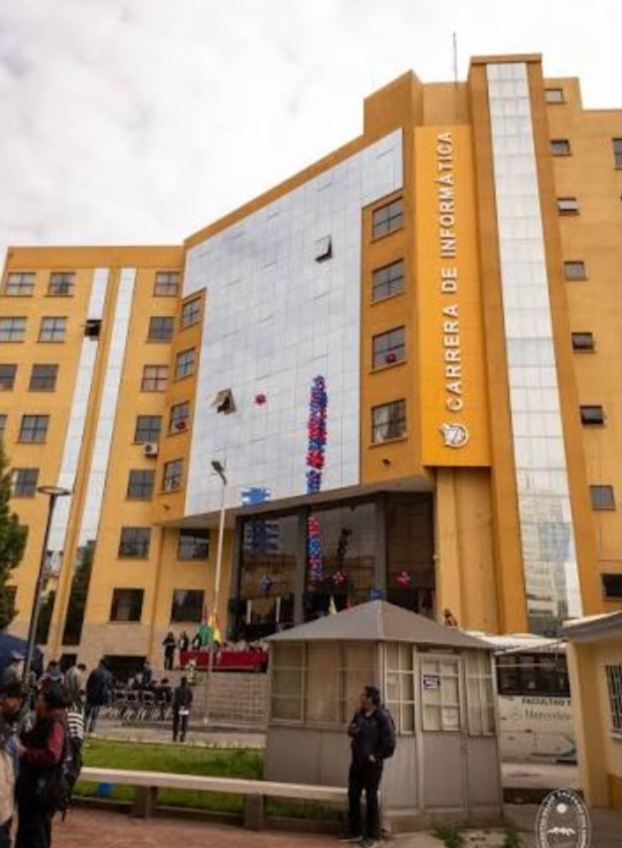

INFORMÁTICA INF99 |
BIENVENIDOS
¡Bienvenido a nuestro sitio web sobre informática!
En este espacio, exploraremos el fascinante mundo de la informática, desde sus conceptos básicos hasta sus aplicaciones más avanzadas. Ya sea que seas un estudiante, un profesional o simplemente alguien interesado en aprender más sobre esta apasionante disciplina, aquí encontrarás información valiosa y recursos útiles.
La Universidad Mayor de San Andrés (UMSA) tiene su sede principal y varios edificios distribuidos en la zona central de la ciudad de La Paz, aunque también cuenta con campus en otras zonas.

La informática es mucho más que cables, pantallas y códigos interminables; es el arte de hacer posible lo imposible. Es el lenguaje universal que traduce los sueños humanos en realidades tangibles a través de la lógica y la creatividad.